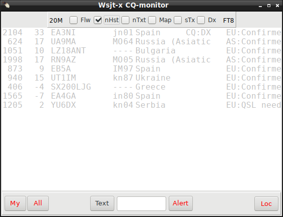
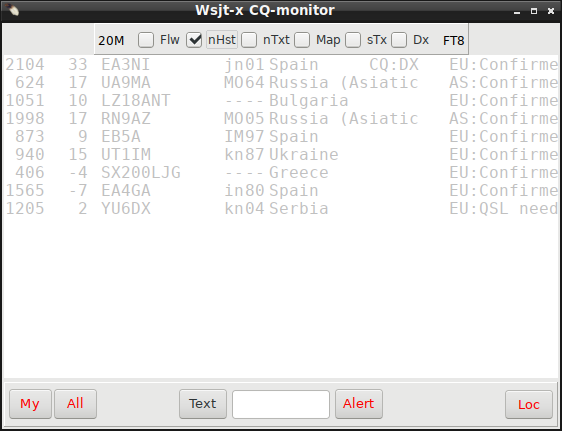
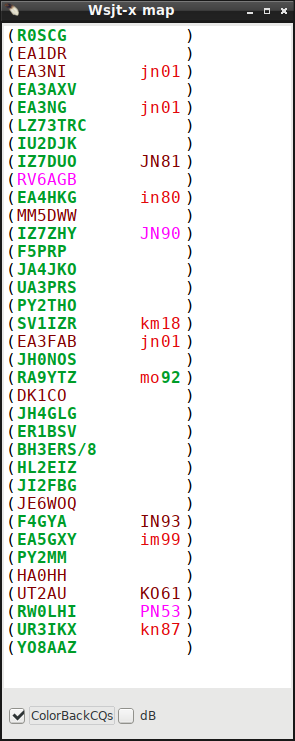
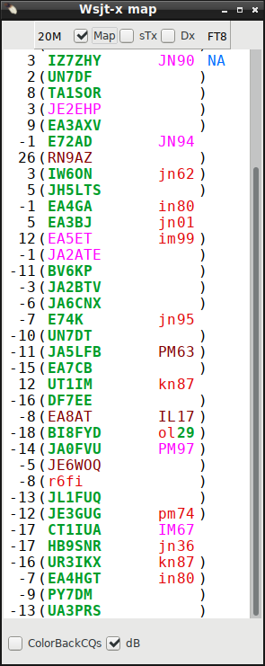

|
WARNING! Backup your data often! BACKUP your log directory at the end of EVERY session! All that you need to backup and store in a safe place is the log database directory located in the ~/.config/cqrlog/database folder, or you can enable the autobackup function in Preferences. This autobackup function creates an ADIF file with a backup of your log. /td> |
| [Menu] |

From New QSO / File select 'Remote mode for wsjt'

Remote mode for WSJT-X-communication is made via UDP dtatgrams that and is supported from WSJT-X 1.5.0 program upwards.
Cqrlog supports WSJT-X UDP remote mode since version 1.9.1

When remote mode is selected it shows last received WSJT-X packet type
number after text “Wsjt-x remote” text. Also color of text changes while receiving packets.
These will show you that UDP link is alive between these programs.
New QSO / Window list

“ Wsjtx monitor “ is visible only if WSJT-X remote mode is selected. Others can be found from there all the time.

Wsjt-x CQ-monitor form opens when you select ”Remote mode for wsjtx” from ”File” of NewQSO window.
Top checkbox selection bar is visible at start by default.
You can hide it clicking with mouse on band or mode visible in both ends of the selection bar.
It can be restored by moving mouse over window's name bar at top. It works same way when wsjtx-MAP mode is selected (see below).
You can close this window and reopen it later via NewQSO/Window/Wsjt-x monitor that is visible only when
remote mode is selected. While it is closed it will not update it’s contents.
Only remote logging and call qrz/hamqth seek are used then.
If UPD port opening for remote fails "NewQSO/Comment to qso" will have text “Could not bind socket for wsjtx!"
 



If you do not want any information texts, just alerts, you can check nTxt to prevent richmemo text updates and minimize window size horizontal or drop it completely down with (_) while alerts and follow are still working. If you have Wsjt-x devel version 1.9.0-rc3 r8592 (or higher) coloring is sent back to Wsjt-x with same choosed colours as CQ-monitor uses. How ever there are some limitations compared to CQ-monitor:


If you are able to use color back feature you may want to change some Wsjt-x color settings and maybe check "CQ only" checbox at Main window. Selecting also font to some of "mono"+ "bold" ones from "Configuration/General/Decoded Text Font" could make a better view.
Hint: If you have had CQ only checked and you want to load Std message from just appeared line from Wsjt map or follow line uncheck CQ only immediately during time that entry is not grayed (ongoing period).
Wsjtx will produce again last periods decode (wsjt map will show it double) and after that you can have effect for double click.
If you do not want any information texts, just alerts, you can check nTxt to prevent text updates and minimize window size horizontal or drop it completely down with (_) while alerts and follow are still working.
Selecting DX checkbox cqrlog fiters away all calls that are from same continent as you are. This works both in Cq monitor and MAP mode
Checking Show LoTW, eQSL usage in CQ-monitor from preferences/fldigi- wsjt interface L & E will show up in front of continent in CQ-monitor

Line of CQ-monitor contains:
If you want to see a bit more in country name you may try to create this script and run it from console. Remember to set execute bit (chmod +x) to script file to get it running. This script will fix some long country names and change comma-space combinations to dot (as CQ-monitor cuts contry name if it sees comma). That way you will see a bit more info in 15chr long country name of CQ-monitor.
--------------cut here--------------------------------------------------------- #/bin/sh cd ~/.config/cqrlog/ctyfiles # fix long names to these 3 files-------------------------------- # /-----Existing name now------/new-name/ file to read > file to write # Do plain Germany sed s/"Federal Republic of Germany"/Germany/g Country.tab > /tmp/fixme.txt mv /tmp/fixme.txt Country.tab sed s/"Federal Republic of Germany"/Germany/g CallResolution.tbl > /tmp/fixme.txt mv /tmp/fixme.txt CallResolution.tbl sed s/"Federal Republic of Germany"/Germany/g AreaOK1RR.tbl > /tmp/fixme.txt mv /tmp/fixme.txt AreaOK1RR.tbl #Next replacement round----------------------------------------- #Do plain name to all "Rebublic of" sed s/"Republic of "//g Country.tab > /tmp/fixme.txt mv /tmp/fixme.txt Country.tab sed s/"Republic of "//g CallResolution.tbl > /tmp/fixme.txt mv /tmp/fixme.txt CallResolution.tbl sed s/"Republic of "//g AreaOK1RR.tbl > /tmp/fixme.txt mv /tmp/fixme.txt AreaOK1RR.tbl #Next replacement round----------------------------------------- #Do replacement ", " to "." Comma cuts name in CQ-monitor, replace with dot for more data sed s/", "/./g Country.tab > /tmp/fixme.txt mv /tmp/fixme.txt Country.tab sed s/", "/./g CallResolution.tbl > /tmp/fixme.txt mv /tmp/fixme.txt CallResolution.tbl sed s/", "/./g AreaOK1RR.tbl > /tmp/fixme.txt mv /tmp/fixme.txt AreaOK1RR.tbl #Next replacement round----------------------------------------- #Do replace USA sed s/"USA - "/"US:"/g AreaOK1RR.tbl > /tmp/fixme.txt mv /tmp/fixme.txt AreaOK1RR.tbl #Next replacement round----------------------------------------- # add your own definitions same way using sed under this line #--------------------------done--------------------------------- #remind to reload fixed files to cqrlog------------------------- echo '------------------------------------------------------------' echo 'Run now: Window->QSOlist->File->"Import DXCC data"' echo 'From dialog select: ".config/cqrlog/ctyfiles" folder open' echo 'Press "Open"' echo '' echo 'You need to run this script after every DXCC upgrade received' echo '' echo 'If you do not like the results delete files:' echo ' CallResolution.tbl' echo ' Country.tab' echo ' AreaOK1RR.tbl' echo ' cqrlog-cty.tar.gz' echo 'from ~/.config/cqrlog/ctyfiles/ directory, then' echo 'run CQRLOG again and confirm auto upgrade' echo '------------------------------------------------------------' #done --------------cut here---------------------------------------------------------
 
CQ-monitor can be turned to "Band map"- type Wsjt-x map by checking "Map". It hides all other controls. How ever if alerts were on they stay on. Exception is that Text alert does not find continents and comments like "New country","QSL needed" etc. Map-mode shows all traffic on band. Colors of callsigns and locators are same than in CQ-monitor. If call is not in parentheses it is a CQ-call. Calls in parentheses have qso if there is no locator shown. If locator is shown they are answering to someones CQ. If closing bracket is replaced with asterisk * it means that callsign is closing his current qso I.E. sending RR73 or 73. If station is calling directed CQ that is not directed to you (same as in CQ-monitor, but in short form) the direction is shown at the and of line. As also all other lines than CQs are compared against your log entries this mode will eat more of cpu cycles than CQ-monitor. Map-mode does not save history, it clears itself always at start of new decoding period if there is something new to show. Otherwise lines are turned gray as in CQ-monitor. You can initiate qso same way as in CQ-monitor by double click on line without parentheses. Double click on line with parentheses loads call to Std messages of Wsjt-x and sets frequency, but does not initiate TX. This is a new property of Wsjt-x 1.9.0-rc3 and up. With previous versions this does not make any action.
dB selection shows station snr report, like it shows up in Band Activity of wsjt-x. ColorBackCQs selection work so that all CQs are printed (colored) back to Wsjt-x Band Activity window and rest of the traffic will appear to Wsjt-x band map.
If you have Wsjt-x devel version 1.9.0-rc3 r8592 (or higher) coloring is sent back to Wsjt-x with same choosed colours as CQ-monitor uses. How ever there are some limitations compared to CQ-monitor:
If you are able to use color back feature you may want to change some Wsjt-x color settings and maybe check "CQ only" checbox at Main window. Selecting also font to some of "mono"+ "bold" ones from "Configuration/General/Decoded Text Font" could make a better view.
Hint: If you have had CQ only checked and you want to load Std message from just appeared line from Wsjt map or follow line uncheck CQ only immediately during time that entry is not grayed (ongoing period). Wsjtx will produce again last periods decode (wsjt map will show it double) and after that you can have effect for double click.


Button Name73 becomes visible when at least one decoded UDP message from WSJT-X is received and Name field of NewQSO has content. Pressing this button will send a FreeTextMessage to WSJT-X containing "TU HISNAME 73" Where HISNAME is text from NewQSO/Name field. This will not start TX. FreeTextMessage length is limited to 13 characters. "Tu " and " 73" will take 6 of them. So name can be only 7 char long. If it is longer it is not sent to WSJT-X and button disappears after pressing to indicate that name is too long. Button disappears also on next decode when NewQSO/Name becomes empty. If you do not like to use generated FreeTextMessage you can double click WSJT-X's button TX5 to get back standard "CALL MYCALL 73" message. This button is made just for testing reply-UDP messages as new WSJT-X will use more of these kind of messages, like callsing coloring in Band activity window by external request.
CQ-monitor has a new design. Window is adjustable and font + size can be changed.
Font style can not be changed as now “Qso never” (default Green) is printed also with bold while all other texts are in normal style.


Same color coding is applied also for locator grid.
Full locator (means 4 first characters of locator) worked before on this band
and mode, this band but not this mode, some other band/mode and never on any band/mode.
If no hits found for full locator then main locator (2 first
letters) are checked same way next . Worked before on this band
and mode, this band but not this mode, some other
band/mode and never on any band/mode.
Calls and locators that are worked before on this band and mode are also printed in lowercase letters while all others are printed with UPPERCASE.

NOTE: Using monospace fonts will keep monitor columns in
order.
At bottom there are 3 alerts to select. The priority of alerts is same as numbering here. Smaller number overrides previous having highest priority. Alert is executed only once per every decoding section.
Text you have typed is read only after you leave edit box. Then
spaces from start and end are removed and in case of “call alert”
text is changed uppercase.
To activate alert press ”Alert”
to turn it’s text green. (it also takes you away from edit box)


To make alerts do something you have to
add a script file ~/.config/cqrlog/voice_keyer/voice_alert.sh
This
script gets parameter $1 of “my”,”loc”,”text” or “call”
depending of alert given.
By using these parameters with your
script you can play sound that you want, or do anything else you like
to happen when alert is issued.
NOTE: Try to keep
script running time as short as possible.
voice_alert.sh:
--------------cut here--------------------------------------------------------- #!/bin/bash
# //audio file name (prefix) played on alert
# //can be:'my' = ansver to my cq,
# // 'loc' = new main grid,
# // 'text'= text found from monitor line
# // 'call'= text fits to the callsign
# // create files you want to be played
# scirpt is seeking names with '.wav' suffix! Change if needed
#select audio card(if needed) and play alert messageaplay ~/.config/cqrlog/voice_keyer/$1.wav
--------------cut here---------------------------------------------------------
You can start Wsjt-x qso by double click a CQ-monitor’s line. Wsjt-x will move to callers QRG and initiate TX.

This requires Wsjt-x's Configuration/Settings/Reporting to have at
least “Accept UDP requests” selected.
Setting also “ Accepted UDP request restores window” will return focus from CQ-monitor back to wsjt-x main window.
A line when someone has answered to you (your call is first at Wsjt-x data line) has ”=” sign just at start of callsign and
locator is marked *QSO if line has reports or 73.
Clicking that line again does not continue qso.
Wsjt-x remote does not allow this kind of command preventing automated qsos. So at this case you have
to go to Wsjt-x screen and initiate report sending by yourself. Or set “auto seg” at wsjt-x/FT8.
Either qso is started from CQ-monitor, or Wsjt-x screen itself, the opponent callsign is added right away to New QSO's callsign field. This way you can see right away if you have had qso with this station on other modes/bands and also all other information like DXCC status, QRZ/HamQTH information etc.
When you either press “Log QSO” at wsjt-x main window, or
get it open automatic when sending 73 by checking Wsjt-x's
Configuration/Settings/Reporting/Prompt me to log qso ,you will have wsjt-x's logging form open.
Check it’s information, add power and remarks if needed. After finishing with it press it’s OK-buttonThen information is transferred to cqrlog.
NOTE: DO NOT press cqrlog/NewQSO/Save QSO [enter] - button to save qso!
If you have enabled auto search from QRZ.com/HamQth.com in cqrlog's preferences all information is fetched during your first transmit (report sending period).
You may alter that information in NewQSO form and it is saved along with wsjt-x logging information.
In case that fetched data has same, but longer locator than wsjt-x qso data has the longer is logged to cqrlog.
I.E wsjt-x data gives KP01, but QRZ.com KP01TN, the longer (more complete) is logged.
If locators differ wsjt-x data is used as it might be a portable or other special qth.
You can set preferences so that cqrlog will start fldigi and/or wsjt-x programs for you when you enter remote mode. This is very handy, but doing that has also one risk.
When fldigi or wsjt-x has been started as a child process of cqrlog they will die at the moment cqrlog crashes for some reason.
If you start them manually as processes of their own and then activate remote mode from cqrlog they keep on running if cqrlog
dies. You can finish your ongoing qso, start cqrlog again, set remote mode on and then log the qso in normal manner.